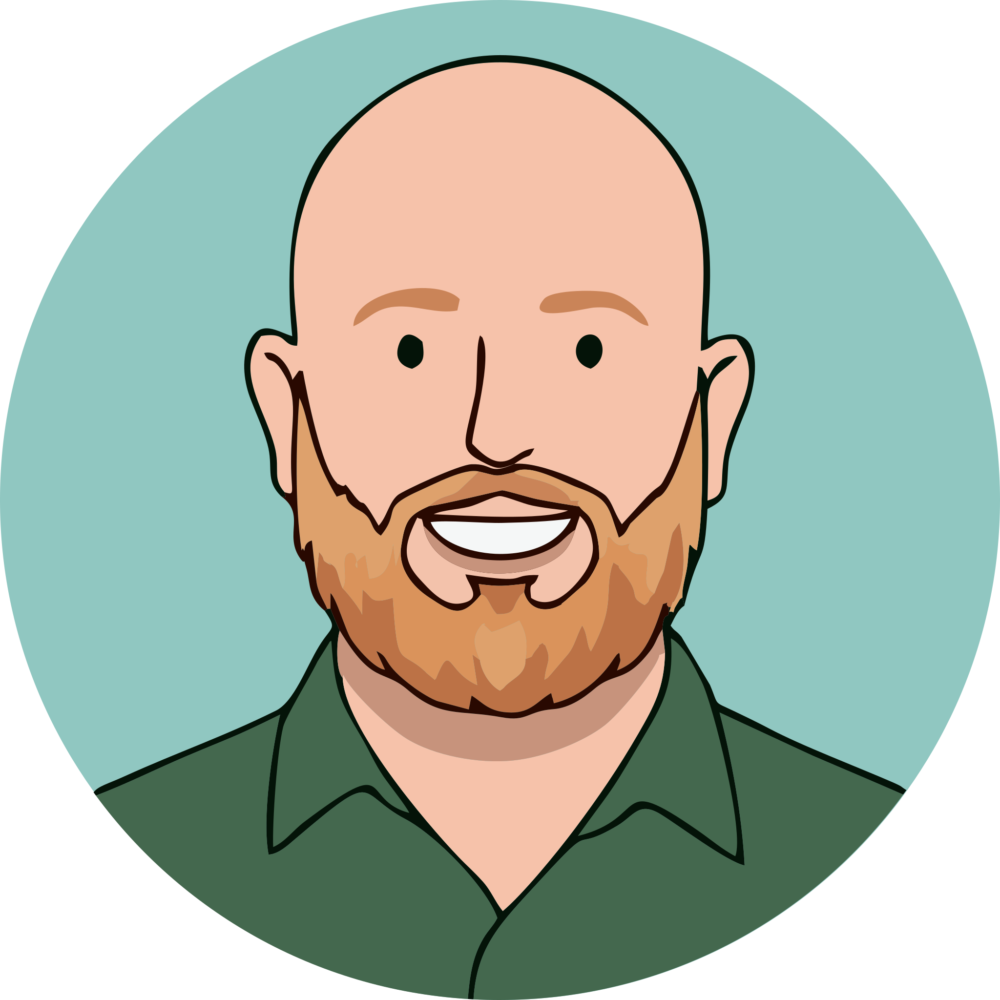
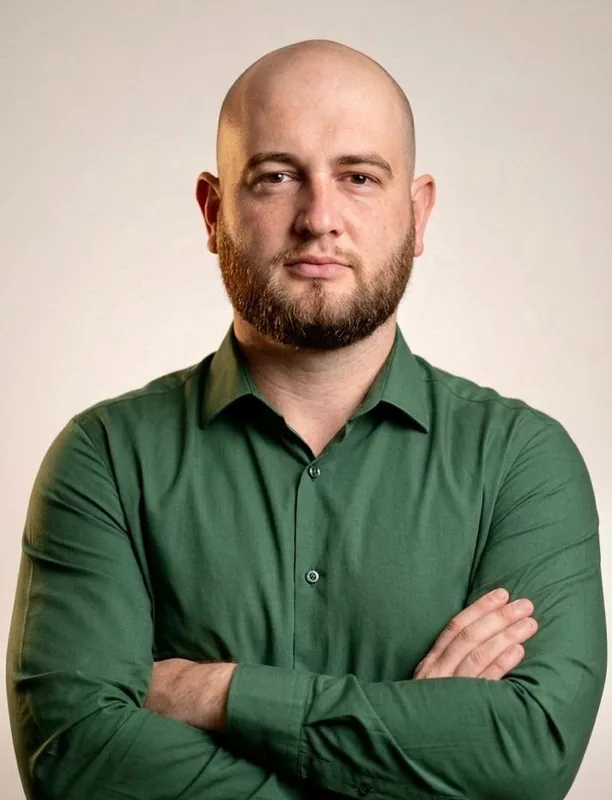

01

João Paulo Leal
Fundador & CTOHardware · Coordenação
Técnico Eletrotécnico com 6 anos de indústria. Lidera a arquitetura física, a topologia RS485 e a parametrização dos microcontroladores que fazem o instrumento existir.
Ver a foto
João Paulo Leal